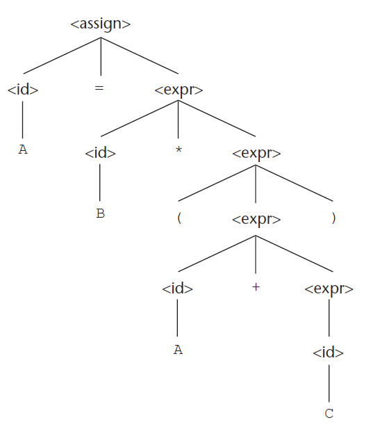
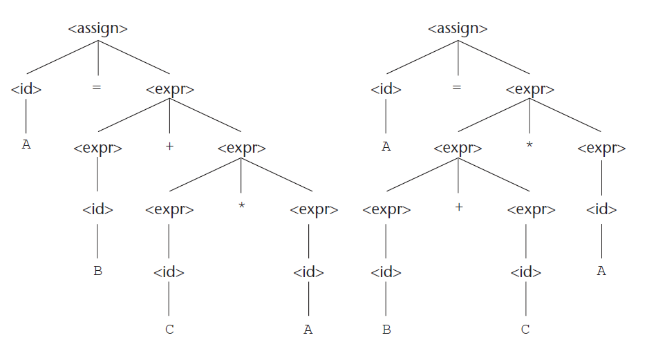
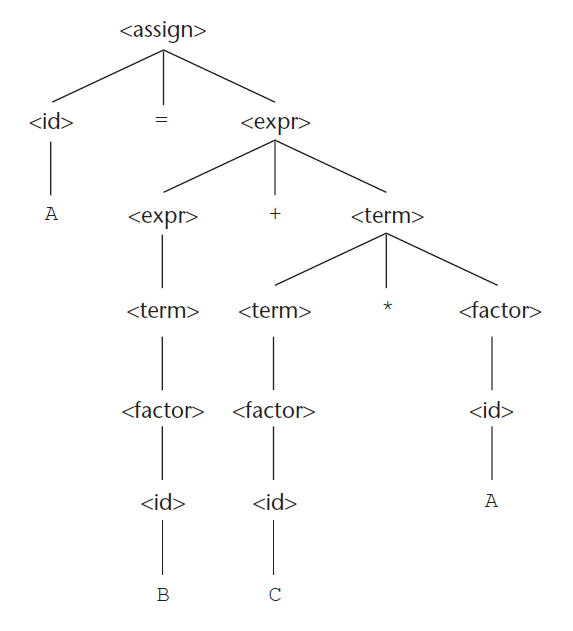
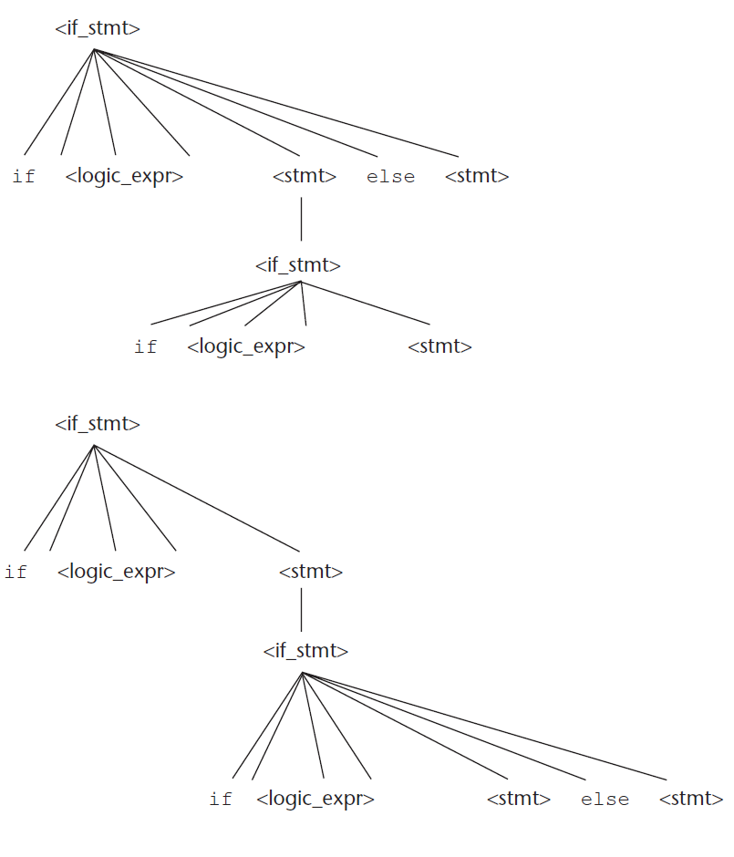
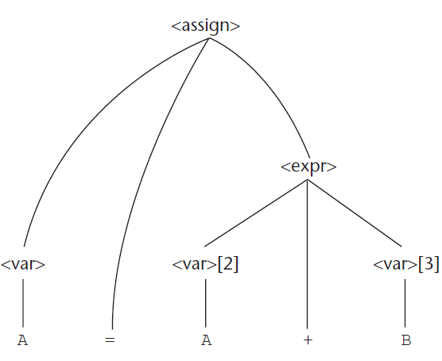
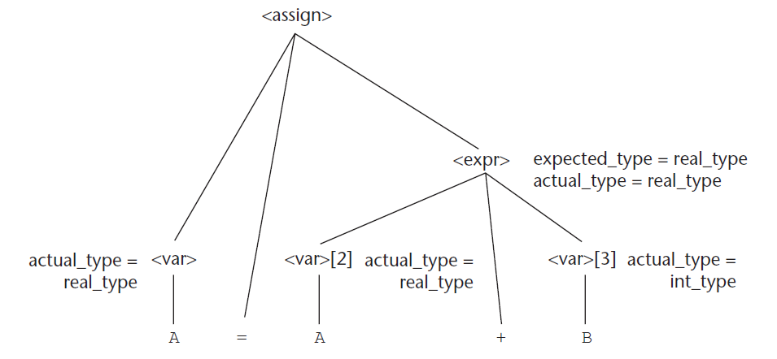

3. Περιγραφή συντακτικού και σημασιολογίας
- Συντακτικό (syntax)
- Σημασιολογία (semantics)
- Μέθοδος περιγραφής συντακτικού γραμματικών χωρίς συμφραζόμενα (CFGs = Context Free Grammars)
- Παραγωγή, δένδρα συντακτικής ανάλυσης, ασάφεια, προτεραιότητα τελεστών, προσεταιριστικότητα τελεστών
- BNF (Backus Naur Form), EBNF (Extended Backus Naur Form)
- Γραμματικές χαρακτηριστικών (attribute grammars) για περιγραφή συντακτικού και στατικής σημασιολογίας
- Δυναμική σημασιολογία
3.1 Εισαγωγή
- Η πληρότητα και η ακρίβεια περιγραφής μιας γλώσσας προγραμματισμού είναι κεφαλαιώδους σημασίας.
- Ορισμένες γλώσσες παρουσιάζουν το πρόβλημα της ύπαρξης πολλών διαφορετικών διαλέκτων ως συνέπεια του όχι απόλυτα ακριβή ορισμού τους.
- Συντακτικό είναι η μορφή (δομή) των εκφράσεων, εντολών, και προγραμματιστικών μονάδων.
- Σημασιολογία είναι η σημασία των εκφράσεων, εντολών, και προγραμματιστικών μονάδων.
- Μια γλώσσα ορίζεται από το συντακτικό και τη σημασιολογία της.
Παράδειγμα: Ποια είναι η σημασιολογία του ακόλουθου κώδικα;
Απάντηση
Ο κώδικας υποδηλώνει επανάληψη των εντολών όσο η λογική_έκφραση είναι αληθής
3.2 Το γενικό πρόβλημα της περιγραφής του συντακτικού
- Μια πρόταση είναι ένα σύνολο χαρακτήρων (συμβολοσειρές) κάποιου αλφαβήτου.
- Οι συντακτικοί κανόνες καθορίζουν τις έγκυρες προτάσεις που περιλαμβάνει η γλώσσα.
- Μια γλώσσα είναι το σύνολο των έγκυρων προτάσεών της.
- Οι κανόνες συντακτικού των φυσικών γλωσσών (π.χ. Ελληνικά, Αγγλικά) είναι πολύ πιο περίπλοκοι από τους κανόνες των τεχνητών γλωσσών (π.χ. Java, Python).
Λέξημα (lexeme)
- Ένα λέξημα είναι η συντακτική μονάδα χαμηλότερου επιπέδου της γλώσσας (π.χ., *, sum, begin).
- Τα λεξήματα δεν περιλαμβάνονται στην περιγραφή του συντακτικού.
- Ένα πρόγραμμα μπορεί να θεωρηθεί ως μια ακολουθία λεξημάτων παρά ως μια ακολουθία χαρακτήρων.
Λεκτική μονάδα (token)
- Μια λεκτική μονάδα είναι μια κατηγορία λεξημάτων (π.χ. αναγνωριστικά μεταβλητών)
- Υπάρχουν λεκτικές μονάδες με ένα μόνο πιθανό λέξημα (π.χ. ο τελεστής +)
Παράδειγμα: Ποια είναι τα λεξήματα και ποιες οι λεκτικές μονάδες για τον ακόλουθο κώδικα;
Απάντηση
| Λέξημα | Λεκτική μονάδα |
|---|---|
| index | αναγνωριστικό |
| = | σύμβολο_ίσον |
| 2 | ακέραια_τιμή |
| * | τελεστής πολλαπλασιασμού |
| count | αναγνωριστικό |
| + | τελεστής πρόσθεσης |
| 17 | ακέραια_τιμή |
| ; | ερωτηματικό |
3.2.1 Μηχανισμοί αναγνώρισης γλωσσών (recognizers)
Οι recognizers διαβάζουν από την είσοδο συμβολοσειρές του αλφαβήτου της γλώσσας και αποφασίζουν το εάν ανήκουν ή όχι στη γλώσσα. Παράδειγμα μηχανισμού αναγνώρισης γλωσσών είναι ο συντακτικός αναλυτής των μεταγλωττιστών.
3.2.2 Μηχανισμοί παραγωγής γλωσσών (generators)
Οι generators παράγουν έγκυρες προτάσεις της γλώσσας. Μπορεί να εξεταστεί αν η σύνταξη μιας συγκεκριμένης πρότασης είναι ορθή πραγματοποιώντας σύγκριση με τη δομή του μηχανισμού παραγωγής.
3.3 Επίσημες μέθοδοι περιγραφής συντακτικού
3.3.1 Μορφή Backus-Naur και γραμματικές χωρίς συμφραζόμενα
H BNF (Backus Naur Form) και οι CFG (Context Free Grammars) είναι ισοδύναμοι τρόποι περιγραφής του συντακτικού μιας γλώσσας.
3.3.1.1 Γραμματικές χωρίς συμφραζόμενα
- Αναπτύχθηκαν από τον Noam Chomsky στα μέσα των 1950s.
- Είχαν ως στόχο την περιγραφή του συντακτικού των φυσικών γλωσσών.
- Ορίζουν μια κατηγορία γλωσσών που ονομάζονται γλώσσες χωρίς συμφραζόμενα.
3.3.1.2 Προέλευση της μορφής Backus-Naur
- Προτάθηκαν από τον John Backus για να περιγράψουν το συντακτικό της Algol 58.
- Τροποποιήθηκαν από τον Peter Naur για την περιγραφή της Algol 60.
- Η BNF είναι ένας φυσικός συμβολισμός για την περιγραφή συντακτικού.
- Η BNF είναι ισοδύναμη με τις CFGs.
3.3.1.3 Βασικές έννοιες BNF
- H BNF είναι μια μετα-γλώσσα για περιγραφή συντακτικού γλωσσών προγραμματισμού.
- Μη-τερματικά (non-terminals): αφαιρέσεις που αναπαριστούν κατηγορίες συντακτικών δομών.
- Τα μη τερματικά εσωκλείονται σε
<>, π.χ.<var>. - Τερματικά (terminals): λεξήματα ή λεκτικές μονάδες.
- Σύμβολο έναρξης: ένα από τα μη-τερματικά σύμβολα.
- Κανόνες BNF: αποτελούνται από αριστερό μέρος που είναι κάποιο μη-τερματικό και από δεξιό μέρος που είναι μια συμβολοσειρά από τερματικά και/ή μη-τερματικά.
- Με τη BNF περιγράφονται:
- Λίστες παρόμοιων δομών.
- Η σειρά με την οποία πρέπει να εμφανίζονται διαφορετικές δομές και ένθετες δομές σε οποιοδήποτε βάθος.
- Προτεραιότητα τελεστών.
- Προσεταιριστικότητα τελεστών.
Παράδειγμα ορισμού της εκχώρησης με BNF (για μια υποθετική γλώσσα προγραμματισμού):
Παράδειγμα πρότασης που περιγράφεται από τον παραπάνω κανόνα:
Παράδειγμα κανόνων BNF με δύο RHS (Right Hand Sides), το σύμβολο | σημαίνει εναλαλκτική υλοποίηση για το δεξί μέρος του κανόνα.
<if_stmt> -> if (<logic_expr>) <stmt>
| if (<logic_expr>) <stmt> else <stmt>
<stmt> -> <single_stmt>
| begin <stmt_list> end
3.3.1.4 Περιγραφή λιστών
Ο ορισμός λιστών μεταβλητού μήκους γίνεται στην BNF με αναδρομή (το μη-τερματικό στο αριστερό μέρος του κανόνα εμφανίζεται ξανά στο δεξί μέρος του κανόνα):
3.3.1.5 Γραμματικές και παραγωγές
- Μια γραμματική είναι μια παραγωγική συσκευή για τον ορισμό γλωσσών.
- Μια παραγωγή (derivation) είναι η επαναλαμβανόμενη εφαρμογή κανόνων, ξεκινώντας από το αρχικό σύμβολο και τερματίζοντας σε μια πρόταση που περιέχει μόνο τερματικά σύμβολα.
Ένα παράδειγμα γραμματικής:
<program> -> <stmts>
<stmts> -> <stmt>
| <stmt> ; <stmts>
<stmt> -> <var> = <expr>
<var> -> a | b | c | d
<expr> -> <term> + <term>
| <term> - <term>
<term> -> <var> | const
Παραγωγή της πρότασης a = b + const (χρησιμοποιώντας αριστερότερες παραγωγές):
<program> => <stmts> <-- sentential form
=> <stmt> <-- sentential form
=> <var> = <expr> <-- sentential form
=> a = <expr> <-- sentential form
=> a = <term> + <term> <-- sentential form
=> a = <var> + <term> <-- sentential form
=> a = b + <term> <-- sentential form
=> a = b + const <-- sentence (μόνο τερματικά σύμβολα)
<assign> -> <id> = <expr>
<id> -> A | B | C
<expr> -> <id> + <expr>
| <id> * <expr>
| ( <expr> )
| <id>
Παραγωγή της πρότασης A = B * (A + C):
<assign> => <id> = <expr>
=> A = <expr>
=> A = <id> * <expr>
=> A = B * <expr>
=> A = B * ( <expr>)
=> A = B * ( <id> + <expr>)
=> A = B * ( A + <expr>)
=> A = B * ( A + <id>)
=> A = B * ( A + C )
3.3.1.6 Δένδρα συντακτικής ανάλυσης
- Τα δένδρα συντακτικής ανάλυσης (parse trees) αποτελούν ιεραρχικές αναπαραστάσεις παραγωγών.
- Κάθε εσωτερικός κόμβος ενός parse tree σημειώνεται με ένα μη-τερματικό σύμβολο και κάθε φύλλο με ένα τερματικό σύμβολο.
Παράδειγμα: Το parse tree για την πρόταση A = B * (A + C):

3.3.1.7 Ασάφεια
Μια γραμματική που παράγει μια προτασιακή μορφή για την οποία υπάρχουν δύο ή περισσότερα διακριτά δένδρα συντακτικής ανάλυσης λέμε ότι είναι ασαφής (ambiquous).
Παράδειγμα ασαφούς γραμματικής:
<assign> -> <id> = <expr>
<id> -> A | B | C
<expr> -> <expr> + <expr>
| <expr> * <expr>
| (<expr>)
| <id>
Για την πρόταση A = B + C * A προκύπτουν δύο διαφορετικά δένδρα συντακτικής ανάλυσης:

3.3.1.8 Προτεραιότητα τελεστών
Αν ένας τελεστής σε μια αριθμητική έκφραση παράγεται χαμηλότερα στο δένδρο συντακτικής ανάλυσης (και συνεπώς πρέπει να αποτιμηθεί πρώτος) τότε έχει προτεραιότητα ως προς τελεστές που παράγονται υψηλότερα στο δένδρο.
Παράδειγμα σαφούς γραμματικής (παράδειγμα 3.4 του βιβλίου):
<assign> -> <id> = <expr>
<id> -> A | B | C
<expr> -> <expr> + <term>
| <term>
<term> -> <term> * <factor>
| <factor>
<factor> -> ( <expr> )
| <id>
Παραγωγή της πρότασης A = B + C * A (αριστερότερες παραγωγές):
<assign> => <id> = <expr>
=> A = <expr>
=> A = <expr> + <term>
=> A = <term> + <term>
=> A = <factor> + <term>
=> A = <id> + <term>
=> A = B + <term>
=> A = B + <term> * <factor>
=> A = B + <factor> * <factor>
=> A = B + <id> * <factor>
=> A = B + C * <factor>
=> A = B + C * <id>
=> A = B + C * A
Παραγωγή της πρότασης A = B + C * A (με δεξιότερες παραγωγές):
<assign> => <id> = <expr>
=> <id> = <expr> + <term>
=> <id> = <expr> + <term> * <factor>
=> <id> = <expr> + <term> * <id>
=> <id> = <expr> + <term> * A
=> <id> = <expr> + <factor> * A
=> <id> = <expr> + <id> * A
=> <id> = <expr> + C * A
=> <id> = <term> + C * A
=> <id> = <factor> + C * A
=> <id> = <id> + C * A
=> <id> = B + C * A
=> A = B + C * A
Το δένδρο συντακτικής ανάλυσης που προκύπτει (και για τις δύο περιπτώσεις) είναι το ακόλουθο:

Κάθε παραγωγή με σαφή γραμματική έχει ένα και μοναδικό δένδρο συντακτικής ανάλυσης. Ωστόσο, το ίδιο δένδρο συντακτικής ανάλυσης μπορεί να προκύψει από διαφορετικές παραγωγές μιας σαφούς γραμματικής.
3.3.1.9 Προσεταιριστικότητα τελεστών
Όταν μια έκφραση περιλαμβάνει δύο τελεστές που έχουν την ίδια προτεραιότητα (π.χ. * και /) τότε απαιτείται ένας σημασιολογικός κανόνας προκειμένου να καθοριστεί ποιος τελεστής θα πρέπει να έχει προτεραιότητα (π.χ. A / B * C). O κανόνας αυτός ονομάζεται προσεταιριστικότητα.
- Αριστερή προσεταιριστικότητα: +, -, *, /
1 + 2 + 3 => 3 + 3 => 6
- Δεξιά προσεταιριστικότητα: ^ (ύψωση σε δύναμη)
2^2^3 => 2^8 => 256
Η προσεταιριστικότητα τελεστών μπορεί να καθορίζεται μέσω της γραμματικής.
Η ακόλουθη γραμματική είναι ασαφής:
Η ακόλουθη γραμματική είναι σαφής (ορίζει αριστερή προσεταιριστικότητα):
Παρατηρήστε ότι ο κανόνας είναι αριστερά αναδρομικός.
Η ακόλουθη γραμματική είναι σαφής (ορίζει δεξιά προσεταιριστικότητα):
Παρατηρήστε ότι ο 1ος κανόνας είναι δεξιά αναδρομικός.
3.3.1.10 Μια ασαφής γραμματική για το if-else
Γραμματική (ασαφής):
Πρόταση:
Δένδρα συντακτικής ανάλυσης (υπάρχουν δύο, λόγω ασαφούς γραμματικής):

Γραμματική (σαφής):
<stmt> -> <matched> | <unmatched>
<matched> -> if (<logic_expr>) <matched> else <matched>
| any non-if statement
<unmatched> -> if (<logic_expr>) <stmt>
| if (<logic_expr>) <matched> else <unmatched>
Για την πρόταση:
υπάρχει ένα μόνο δένδρο συντακτικής ανάλυσης για την παραπάνω πρόταση.
3.3.2 Εκτεταμένη BNF (Extended BNF)
Η εκτεταμένη BNF δεν ενισχύει την περιγραφική δύναμη της BNF, απλά αυξάνει την ευκολία ανάγνωσης και γραφής του.Τρεις επεκτάσεις:
1) Προαιρετικά τμήματα του RHS τοποθετούνται σε αγκύλες []
Αντί για:
σε EBNF γράφουμε:
2) Χρήση αγκυλών {} υποδηλώνουν ότι το τμήμα που εσωκλείεται μπορεί να επαναλαμβάνεται απεριόριστα ή να αποκλειστεί εντελώς.
Αντί για:
σε EBNF γράφουμε:
3) Χρήση παρενθέσεων και τελεστή | για να υποδηλώσει δυνατότητα επιλογής ενός στοιχείου από μια ομάδα στοιχείων
Αντί για:
σε EBNF γράφουμε:
Παράδειγμα γραμματικής σε BNF και ισοδύναμης σε EBNF
BNF
<expr> -> <expr> + <term>
| <expr> - <term>
| <term>
<term> -> <term> * <factor>
| <term> / <factor>
| <factor>
<factor> -> <exp> ^ <factor>
| <exp>
<exp> -> (<expr>)
| id
EBNF (ισοδύναμο με το παραπάνω σε BNF)
<expr> -> <term> {(+ | -) <term>}
<term> -> <factor> {(* | /) <factor>}
<factor> -> <exp> { ^ <exp>}
<exp> -> (<expr>) | id
Επιπλέον παραλλαγές στην EBNF
- Εναλλακτικά RHS τοποθετούνται σε ξεχωριστές γραμμές αντί για |
- Χρήση : αντί για ->
- Χρήση opt για προαιρετικά μέρη, αντί για αγκύλες [ ]
- Χρήση oneof για επιλογές αντί για παρενθέσεις και |
3.3.3 Γραμματικές και recognizers
Δεδομένης της γραμματικής μιας γλώσσας χωρίς συμφραζόμενα, μπορεί να κατασκευαστεί αυτόματα ένας αναγνωριστικός (recognizer) μηχανισμός για προγράμματα της γλώσσας. Συνεπώς, η κατασκευή του συντακτικού αναλυτή για μια νέα γλώσσα μπορεί να αυτοματοποιηθεί με εργαλεία λογισμικού όπως το yacc, το bison κ.α.
3.4 Γραμματικές χαρακτηριστικών (ή κατηγορικές γραμματικές)
Μια γραμματική χαρακτηριστικών (attribute grammar) είναι μια γραμματική που επιτυγχάνει να να περιγράψει τη δομή μιας γλώσσας προγραμματισμού καλύτερα από μια γραμματική χωρίς συμφραζόμενα.
3.4.1 Στατική σημασιολογία
Κανόνες στατικής σημασιολογίας: πρόκειται για κανόνες του συντακτικού των γλωσσών προγραμματισμού που μπορούν να ελεγχθούν κατά τη μεταγλώττιση και οι οποίοι είτε δεν μπορούν να οριστούν με γραμματικές χωρίς συμφραζόμενα είτε ορίζονται μεν αλλά με δύσχρηστο τρόπο.
3.4.2 Βασικές έννοιες
Οι γραμματικές χαρακτηριστικών είναι γραμματικές χωρίς συμφραζόμενα στις οποίες έχουν προστεθεί:
- χαρακτηριστικά: σχετίζονται με τερματικά και μη-τερματικά σύμβολα και είναι παρόμοια με μεταβλητές καθώς δέχονται τιμές
- συναρτήσεις υπολογισμού χαρακτηριστικών: καθορίζουν τον τρόπο υπολογισμού των χαρακτηριστικών
- κατηγορήματα: εκφράζουν τους σημασιολογικούς κανόνες γραμματικής της γλώσσας
3.4.3 Ορισμός γραμματικών χαρακτηριστικών
Μια γραμματική χαρακτηριστικών είναι μια γραμματική χωρίς συμφραζόμενα όπου:
- Για κάθε σύμβολο γραμματικής υπάρχει ένα σύνολο τιμών χαρακτηριστικών Α(Χ).
- Για κάθε κανόνα γραμματικής υπάρχει ένα σύνολο συναρτήσεων που ορίζουν χαρακτηριστικά μη-τερματικών του κανόνα
- Για κάθε κανόνα υπάρχει ένα σύνολο κατηγορημάτων που πρέπει να ελέγχονται για να διασφαλιστεί η συνέπεια των χαρακτηριστικών
Έστω ένας κανόνας:
Τα λεγόμενα συντιθέμενα χαρακτηριστικά (synthesized attributes) ορίζονται από συναρτήσεις της μορφής:
Δηλαδή, η τιμή ενός συντιθέμενου χαρακτηριστικού σε έναν κόμβο του δένδρου συντακτικής ανάλυσης εξαρτάται μόνο από τιμές χαρακτηριστικών σε κόμβους παιδιά αυτού του κόμβου.
Τα λεγόμενα κληρονομούμενα χαρακτηριστικά (inherited attributes) ορίζονται από συναρτήσεις της μορφής:
Δηλαδή, η τιμή ενός κληρονομούμενου χαρακτηριστικού σε έναν κόμβο του δένδρου συντακτικής ανάλυσης εξαρτάται μόνο από τις τιμές του χαρακτηριστικών του γονέα του και των άλλων παιδιών του γονέα του.
Τα συντιθέμενα χαρακτηριστικά μεταδίδουν σημασιολογικές πληροφορίες με ανοδική πορεία σε ένα δένδρο σημασιολογικής ανάλυσης. Τα κληρονομούμενα χαρακτηριστικά μεταδίδουν σημασιολογικές πληροφορίες με καθοδική και πλευρική πορεία σε ένα δένδρο σημασιολογικής ανάλυσης.
Αν έχουν υπολογιστεί όλες οι τιμές χαρακτηριστικών σε ένα δένδρο συντακτικής ανάλυσης τότε το δένδρο λέγεται ότι είναι πλήρως χαρακτηρισμένο.
3.4.4 Εσωτερικά χαρακτηριστικά (intrinsic attributes)
Τα εσωτερικά χαρακτηριστικά είναι συντιθέμενα χαρακτηριστικά οι τιμές των οποίων ορίζονται εκτός του δένδρου συντακτικής ανάλυσης και αποδίδονται στα φύλλα του δένδρου.
3.4.5 Παραδείγματα γραμματικών χαρακτηριστικών
Έστω το ακόλουθο συντακτικό μιας γλώσσας
Η στατική σημασιολογία ορίζει ότι οι μεταβλητές είναι δύο τύπων int και real. Όταν υπάρχουν δύο μεταβλητές στη δεξιά πλευρά μιας εκχώρησης, οι μεταβλητές δεν είναι απαραίτητο να είναι του ίδιου τύπου. Ειδικότερα ισχύει ότι:
- όταν οι τύποι των δύο μεταβλητών δεν είναι ίδιοι, τότε ο τύπος της έκφρασης είναι πραγματικός.
- όταν οι τύποι των δύο μεταβλητών είναι ίδιοι, τότε ο τύπος της έκφρασης είναι ίδιος με αυτό τον τύπο.
Τα χαρακτηριστικά των μη-τερματικών συμβόλων είναι:
- actual_type: Συντιθέμενο χαρακτηριστικό που σχετίζεται με τα μη-τερματικά
<var>και<expr>. Χρησιμοποιείται για την αποθήκευση του πραγματικού τύπου,intήreal, μιας μεταβλητής ή μιας έκφρασης. Αν πρόκειται για μεταβλητή, ο πραγματικός τύπος είναι εσωτερικό χαρακτηριστικό (intrinsic attribute). Αν πρόκειται για έκφραση, καθορίζεται από τους πραγματικούς τύπους των παιδιών του μη τερματικού<expr>. - expected_type: Κληρονομούμενο χαρακτηριστικό που σχετίζεται με το μη-τερματικό
<expr>. Χρησιμοποιείται για να αποθηκεύσει τον τύπο,intήreal, που αναμένεται για την έκφραση, όπως καθορίζεται από τον τύπο της μεταβλητής στο αριστερό μέρος της εντολής ανάθεσης.
Η γραμματική χαρακτηριστικών στο σύνολο της είναι η ακόλουθη:
1. Συντακτικός κανόνας: <assign> -> <var> = <expr>
Σημασιολογικός κανόνας: <expr>.expected_type = <var>.actual_type
2. Συντακτικός κανόνας: <expr> -> <var>[2] + <var>[3]
Σημασιολογικός κανόνας:
<expr>.actual_type =
if (<var>[2].actual_type = int_type) and (<var>[3].actual_type = int_type) then
int_type
else
real_type
end if
Κατηγόρημα: <expr>.actual_type == <expr>.expected_type
3. Συντακτικός κανόνας: <expr> -> <var>
Σημασιολογικός κανόνας: <expr>.actual_type = <var>.actual_type
Κατηγόρημα: <expr>.actual_type == <expr>.expected_type
4. Συντακτικός κανόνας: <var> -> A | B | C
I. Συντακτικός κανόνας: <var> -> A
Σημασιολογικός κανόνας: <var>.actual_type = look-up(A.value)
II. Συντακτικός κανόνας: <var> -> B
Σημασιολογικός κανόνας: <var>.actual_type = look-up(B.value)
III. Συντακτικός κανόνας: <var> -> C
Σημασιολογικός κανόνας: <var>.actual_type = look-up(C.value)
Η συνάρτηση look-up ελέγχει αν υπάρχει ένα όνομα μεταβλητής στον πίνακα συμβόλων και επιστρέφει τον τύπο της μεταβλητής
Το δένδρο συντακτικής ανάλυσης για την πρόταση A = A + B είναι το ακόλουθο:

Με την ακόλουθη σειρά αποτίμησης είναι δυνατός ο υπολογισμός των χαρακτηριστικών:
<var>.actual_type <- look-up(A) (κανόνας 4)
<expr>.expected_type <- <var>.actual_type (κανόνας 1)
<var>[2].actual_type <- look-up(A) (κανόνας 4)
<var>[3].actual_type <- look-up(B) (κανόνας 4)
<expr>.actual_type <- είτε int είτε real (κανόνας 2)
<expr>.expected_type == <expr>.actual_type που είναι είτε TRUE είτε FALSE
Αν το Α είναι real και το B είναι int τότε προκύπτει το ακόλουθο επισημειωμένο δένδρο συντακτικής ανάλυσης:

3.5 Περιγραφή του νοήματος των προγραμμάτων: Δυναμική σημασιολογία
Δεν υπάρχει ένας κοινά αποδεκτός συμβολισμός ή φορμαλισμός για την περιγραφή της σημασιολογίας των γλωσσών προγραμματισμού. Οι 3 κύριοι τρόποι περιγραφής της σημασιολογίας είναι οι:
- Λειτουργική σημασιολογία
- Δηλωτική σημασιολογία
- Αξιωματική σημασιολογία
Η μεθοδολογίες και οι συμβολισμοί για τη σημασιολογία επιτρέπουν (σε κάποιο βαθμό):
- την πληρέστερη περιγραφή των δομών της γλώσσας
- την κατασκευή μηχανισμών απόδειξης ορθότητας προγραμμάτων
- την κατασκευή γεννητριών μεταγλωττιστών
- την ανίχνευση ασαφειών και ασυνεπειών στην κατασκευή των γλωσσών προγραμματισμού
3.5.1 Λειτουργική σημασιολογία (Operational Semantics)
- Περιγράφει το νόημα ενός προγράμματος εκτελώντας τις εντολές του προγράμματος σε μια μηχανή είτε σε προσομοίωση είτε πραγματικά.
- Η αλλαγή στην κατάσταση της μηχανής μνήμη, καταχωρητές, κ.λπ .) ορίζει τη σημασία των εντολών.
3.5.1.1 Η βασική διαδικασία
Αρχικά σχεδιάζεται μια ενδιάμεση γλώσσα με κύριο επιθυμητό χαρακτηριστικό τη σαφήνεια. Κάθε δομή της ενδιάμεσης γλώσσας πρέπει να έχει προφανές και σαφές νόημα.
Παράδειγμα λειτουργικής σημασιολογίας για την εντολή for της C
Γενικά, ισχύει ότι οι ακόλουθες εντολές επαρκούν για την περιγραφή της λειτουργικής σημασιολογίας των απλών εντολών ελέγχου μιας τυπικής γλώσσας προγραμματισμού (ωστόσο, χρειάζεται επεκτάσεις προκειμένου να περιγραφεί η σημασιολογία των μετατροπών τύπων, των διατάξεων, των δεικτών και των υποπρογραμμάτων).όπου:
ident = αναγνωριστικό
var = αναγνωριστικό ή σταθερά
un_op = μοναδιαίος τελεστής
bin_op = δυαδικός τελεστής
rel_op = συγκριτικός τελεστής
3.5.1.2 Αποτίμηση της λειτουργικής σημασιολογίας
- Καλή αν χρησιμοποιείται χωρίς προσκόλληση στην τυπικότητα εγχειρίδια γλώσσας , κ.λπ.
- Εξαιρετικά πολύπλοκη αν χρησιμοποιηθεί τυπικά π.χ., VDL), όπως χρησιμοποιήθηκε για την περιγραφή της σημασιολογίας της PL/I.
- Βασίζεται σε γλώσσες προγραμματισμού χαμηλότερου επιπέδου και όχι στα μαθηματικά ή στη λογική.
- Οι προτάσεις μιας γλώσσας προγραμματισμού περιγράφονται από προτάσεις μιας γλώσσας προγραμματισμού χαμηλότερου επιπέδου.
3.5.2 Δηλωτική σημασιολογία (Denotational Semantics)
- Βασίζεται σε θεωρία αναδρομικών συναρτήσεων.
- Ορισμός ενός μαθηματικού αντικειμένου για κάθε οντότητα της γλώσσας.
- Ορισμός μιας συνάρτησης που αντιστοιχεί στιγμιότυπα των οντοτήτων της γλώσσας σε στιγμιότυπα των αντίστοιχων μαθηματικών αντικειμένων.
- Το νόημα των δομών της γλώσσας ορίζεται μόνο από τις τιμές των μεταβλητών του προγράμματος.
Αποτίμηση της δηλωτικής σημασιολογίας
- Μπορεί να χρησιμοποιηθεί για αποδείξεις ορθότητας προγραμμάτων.
- Παρέχει έναν μαθηματικά αυστηρό τρόπο σκέψης για τα προγράμματα.
- Μπορεί να βοηθήσει στη σχεδίαση γλωσσών.
- Έχει χρησιμοποιηθεί στη σχεδίαση συστημάτων γεννητριών μεταγλωττιστών.
- Λόγω πολυπλοκότητάς, παρουσιάζει μικρή χρησιμότητα για τους χρήστες της γλώσσας.
3.5.3 Αξιωματική σημασιολογία (Axiomatic Semantics)
- Βασίζεται στον κατηγορηματικό λογισμό.
- Ορίζονται αξιώματα ή κανόνες συμπερασμού για κάθε τύπο εντολής της γλώσσας προκειμένου να επιτραπούν μετασχηματισμοί λογικών εκφράσεων σε περισσότερο τυπικές λογικές εκφράσεις.
Αποτίμηση της αξιωματικής σημασιολογίας
- Είναι δύσκολη η ανάπτυξη αξιωμάτων ή κανόνων συμπερασμού για όλες τις εντολές μιας γλώσσας.
- Αποτελεί καλό εργαλείο για αποδείξεις ορθότητας, και εξαιρετικό πλαίσιο συλλογισμού για τα προγράμματα, αλλά δεν είναι το ίδιο χρήσιμο για χρήστες γλωσσών και συγγραφείς μεταγλωττιστών.
Επιπλέον ασκήσεις για το κεφάλαιο 3
- Δίνεται η ακόλουθη γραμματική:
<stmt> -> <assignment_ stmt> | <if_ stmt>
<assignment_ stmt> -> <var> = <expr>;
<if_ stmt> -> if (<cond>) <stmt> else <stmt>
<cond> -> <expr> == <expr>
<expr> -> <var>
| <const>
| <expr> + <expr>
<var> -> a | b | c
<cons> -> 0 | 1 | 2
Γράψτε μια αριστερότερη παραγωγή για την ακόλουθη πρόταση:
Λύση άσκησης 1
<stmt> ->
<if_stmt> ->
if (<cond>) <stmt> else <stmt> ->
if (<expr> == <expr>) <stmt> else <stmt> ->
if (<var> == <expr>) <stmt> else <stmt> ->
if (a == <expr>) <stmt> else <stmt> ->
if (a == <const>) <stmt> else <stmt> ->
if (a == 0) <stmt> else <stmt> ->
if (a == 0) <assignment_stmt> else <stmt> ->
if (a == 0) <var> = <expr>; else <stmt> ->
if (a == 0) b = <expr>; else <stmt> ->
if (a == 0) b = <const>; else <stmt> ->
if (a == 0) b = 2; else <stmt> ->
if (a == 0) b = 2; else <assignment_stmt> ->
if (a == 0) b = 2; else <var> = <expr>; ->
if (a == 0) b = 2; else <var> = <expr>; ->
if (a == 0) b = 2; else c = <expr>; ->
if (a == 0) b = 2; else c = <expr> + <expr>; ->
if (a == 0) b = 2; else c = <var> + <expr>; ->
if (a == 0) b = 2; else c = a + <expr>; ->
if (a == 0) b = 2; else c = a + <const>; ->
if (a == 0) b = 2; else c = a + 1;